Relationship to My Work

Do I feel proud of my work?
What makes me most excited to create?
Does it gives me tremendous anxiety?
How do I feel when I finish a work?
How do I feel when I don't finish a work?
Do I have any personal philosophies I follow in my creative practice?